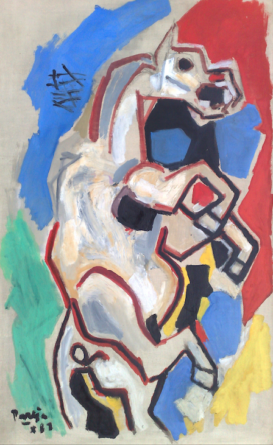
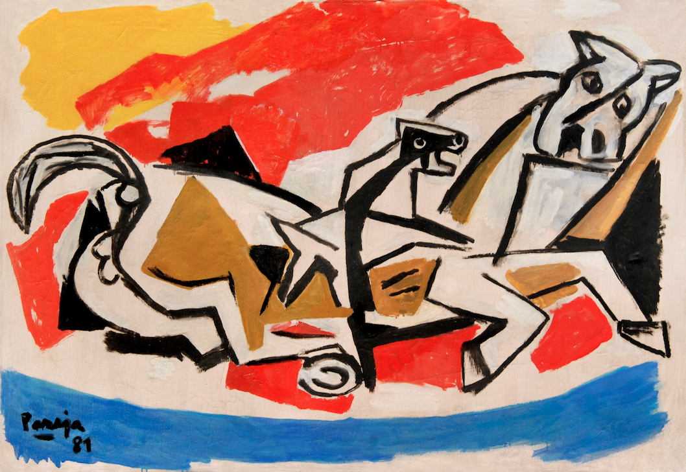
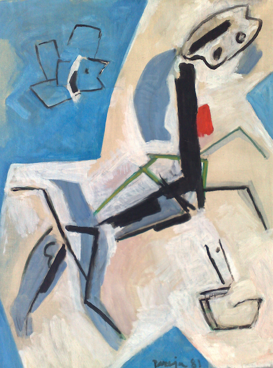
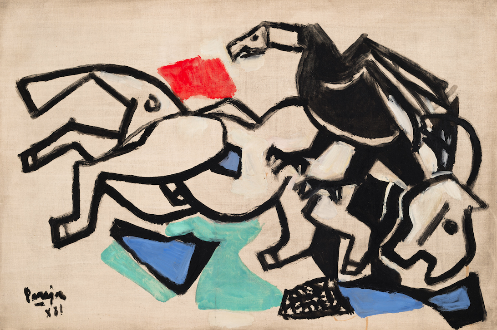
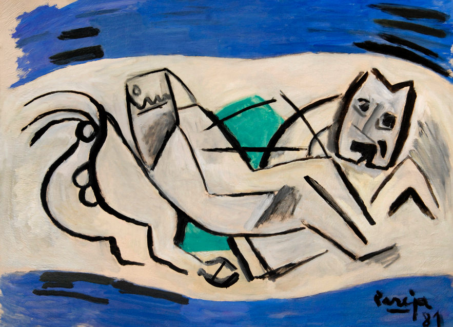

Análisis de la Obra II
ARTISTA: PAREJA, MIGUEL ÁNGEL
Serie de los caballos
La serie de los caballos es un conjunto de obras que Miguel Ángel pintó en 1981, tres años antes de su muerte.
Recordemos que para Pareja el arte era un camino de búsqueda incesante. Una búsqueda de maneras de pintar, de maneras de expresarse, una forma de relato. En la CRONOLOGÍA VISUAL podemos ver las transformaciones de su pintura a los largo de los años.
Los caballos están representados con líneas y figuras. No es enseguida que nos damos cuenta de que son caballos sino que lo descubrimos luego de unos segundos de observación. Son representaciones nada naturalistas, es decir que el artista no pinta al caballo como es en realidad, sino que lo pinta como él lo siente en ese momento. El resultado es una nueva realidad, construida con pocos elementos y que dicen mucho.
Observemos sus pinturas de la serie de los caballos y recordemos que el caballo es símbolo de libertad en nuestra cultura. Antes de continuar la lectura, sino lo hiciste ya, dedica unos minutos a contemplar estas pinturas.

Los caballos están representados con líneas y figuras. No es enseguida que nos damos cuenta de que son caballos sino que lo descubrimos luego de unos segundos de observación. Son representaciones nada naturalistas, es decir que el artista no pinta al caballo como es en realidad, sino que lo pinta como él lo siente en ese momento. El resultado es una nueva realidad, construida con pocos elementos y que dicen mucho.
- 
Obra 1
- 
Obra 2
- 
Obra 3
- 
Obra 4
- 
Obra 5
-
Algo que pueden notar es que el caballo y el fondo se encuentran en un mismo plano, no hay profundidad.
Hay muchas perspectivas mezcladas, esto es que podemos ver al mismo tiempo los caballos vistos desde adelante, atrás, de costado, todas las posiciones están juntas en una misma figura. El trazo del pincel y los colores utilizados son intensos.
-
El gesto de las cabezas de los caballos expresa angustia y terror. Los trazos que componen sus cuerpos revelan tensiones. Efectivamente, no son caballos que están pastando felices en una pradera. Se percibe una amenaza.
-
En esta obra, en la esquina superior de fondo celeste, hay un carancho que sobrevuela en un posible ataque.
En la esquina opuesta de abajo vemos unas líneas que representan a una serpiente, también próxima a morder. El caballo se encuentra atrapado entre estas dos amenazas, se lo ve en postura defensiva. Hay una cierta desesperación en él.
-
En estas obras hay una mayor simplificación del dibujo y la coloración. Lo más importante son los rasgos, gestos y sucesos. Así la pintura se vuelve más libre, adquiere mayor movimiento. Es más cercana a la interpretación del artista sobre el mundo que al mundo tal cual lo vemos.
El artista busca lo esencial. Cuando pinta toma decisiones según su intuición, se deja llevar por lo que cree y siente.
Las figuras son reducidas en sus detalles y distorsionadas. Se depuran en busca de lo esencial para poder decir algo con claridad.
-
El caballo, símbolo de la libertad, en las pinturas de Pareja representa una libertad amenazada, atacada, rota.
Las obras fueron realizadas durante la dictadura militar en Uruguay, en tiempos de mucha violencia y suspensión de las libertades. La serie de los caballos de Miguel Ángel Pareja fue la forma en que el artista expresó el malestar y la desesperación que atravesaba el país.
La dictadura fue un período durante el cual Uruguay fue regido por un gobierno militar. Los medios de prensa estaban prohibidos, la libertad de expresión suspendida. En aquellos tiempos muchos artistas realizaban sus obras con mensajes ocultos porque era la única manera de denunciar la violencia, sin correr peligro ellos mismos. En estas obras el caballo es elegido como símbolo de la patria y de la libertad. Las escenas dan cuenta de situaciones de peligro y amenaza. La presencia del carancho y la serpiente, como también del perro, representan las fuerzas del régimen. Dan cuenta de la persecución, encarcelamiento y asesinato de quienes se oponían a él, dejando la patria y las libertades (el caballo)
PROPUESTA:
Escribe un relato sobre esta última obra. Y dibuja una escena anterior y otra posterior a la que muestra la pintura.